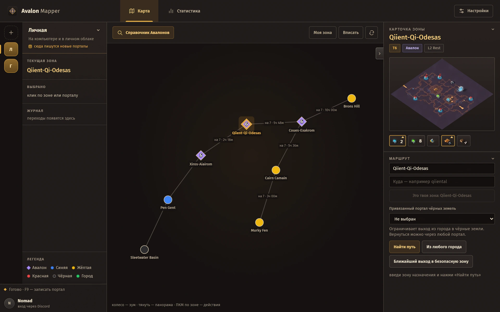
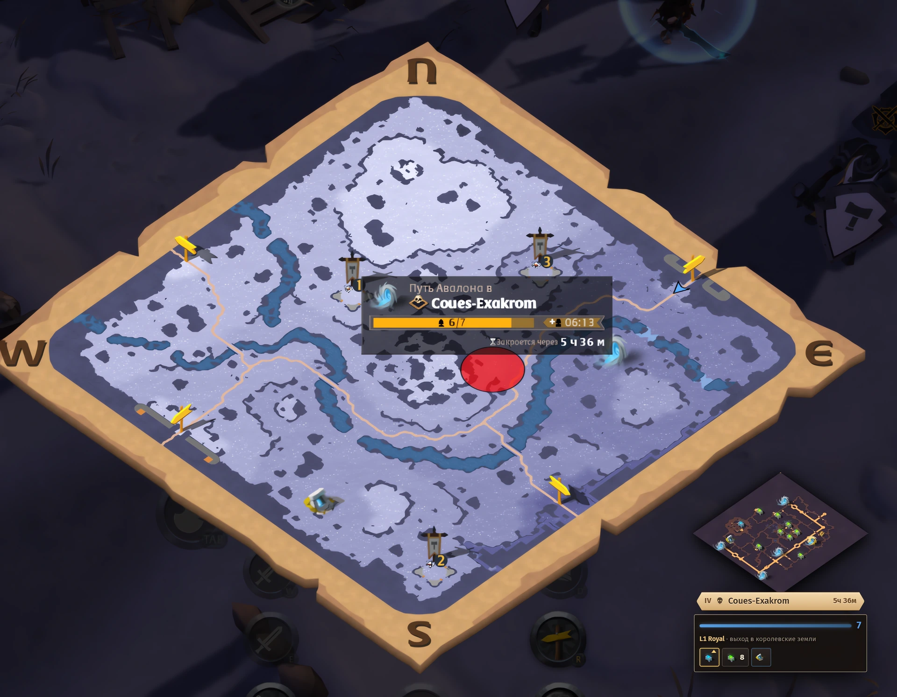
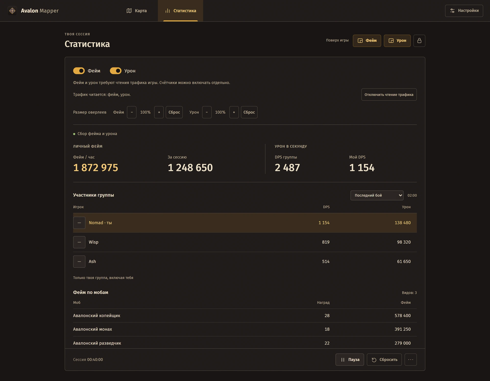
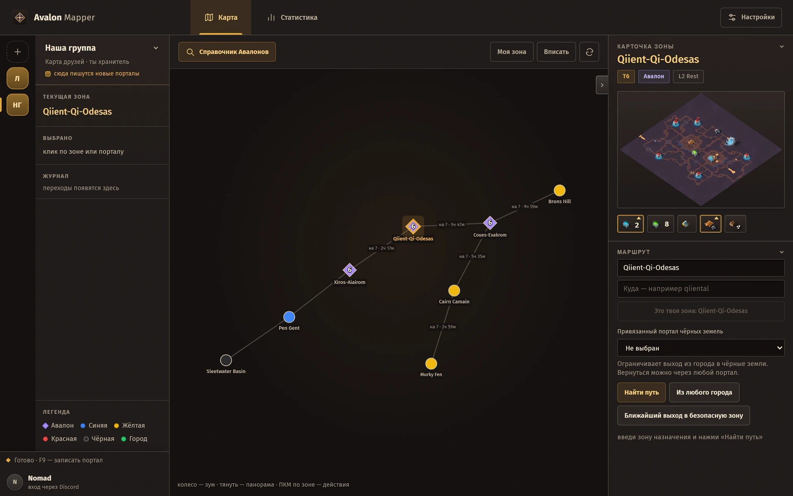

Твоя карта Дорог Авалона.
Порталы, маршруты, общая карта группы и статистика сессии в Albion Online.
Скачать для Windows
Записывай портал по F9

Бесплатно для каждого
Записывай без лимита.
Автоматическая и ручная запись порталов — бесплатно и без дневного лимита.
Личная карта, маршруты и статистика бесплатны. Время закрытия портала всегда настоящее.
Как прошла охота?

Исследуй вместе

Свой сервер для друзей
Приложение бесплатно. Владелец группового сервера активирует код на 30 дней; участники подключаются бесплатно.
Сервер для группы
799 ₽ / 30 дней
Закрытая карта для друзей или гильдии. Владелец оплачивает свой групповой сервер, остальные присоединяются по приглашению.
Все участники бесплатно записывают и смотрят порталы без дневного лимита.
Создание сервера: «+» → название и код активации. Продление: Настройки → Мои сервера или ПКМ по серверу → Мои сервера. Код добавляет 30 дней к оставшемуся сроку.